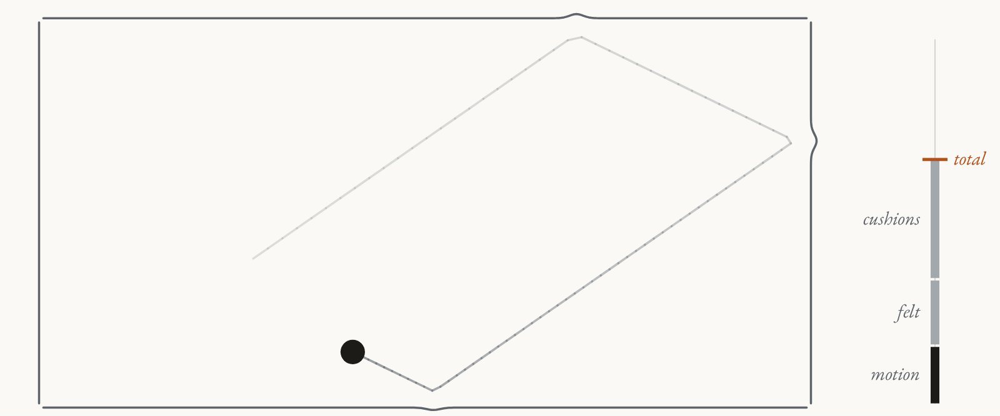
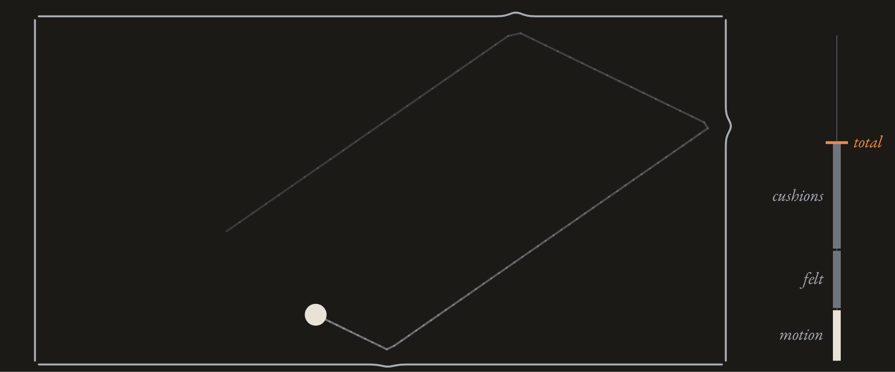
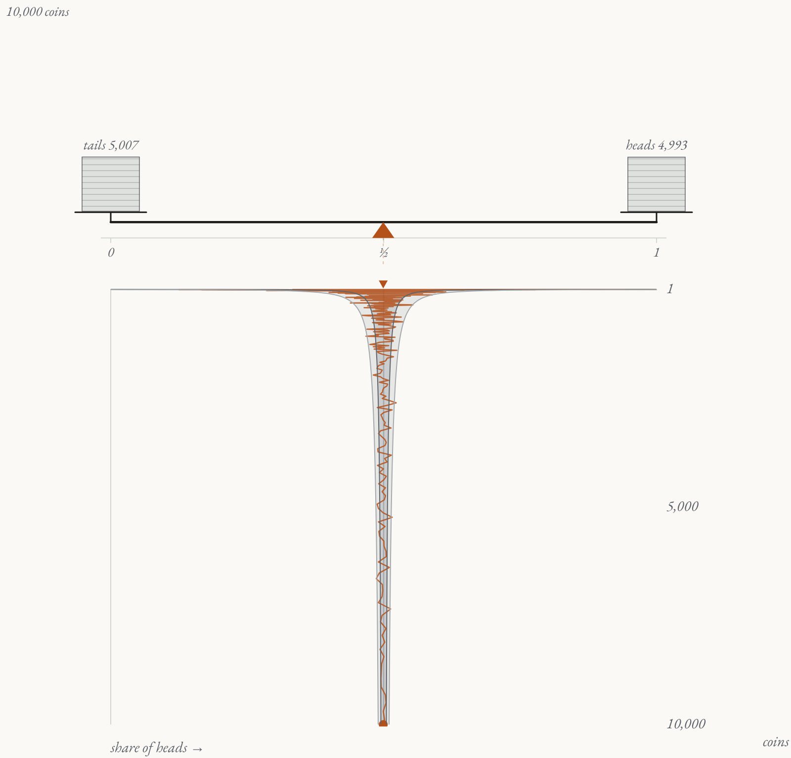
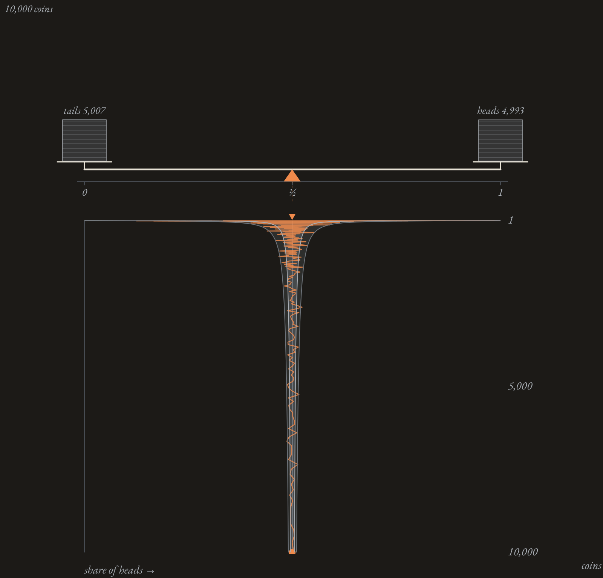
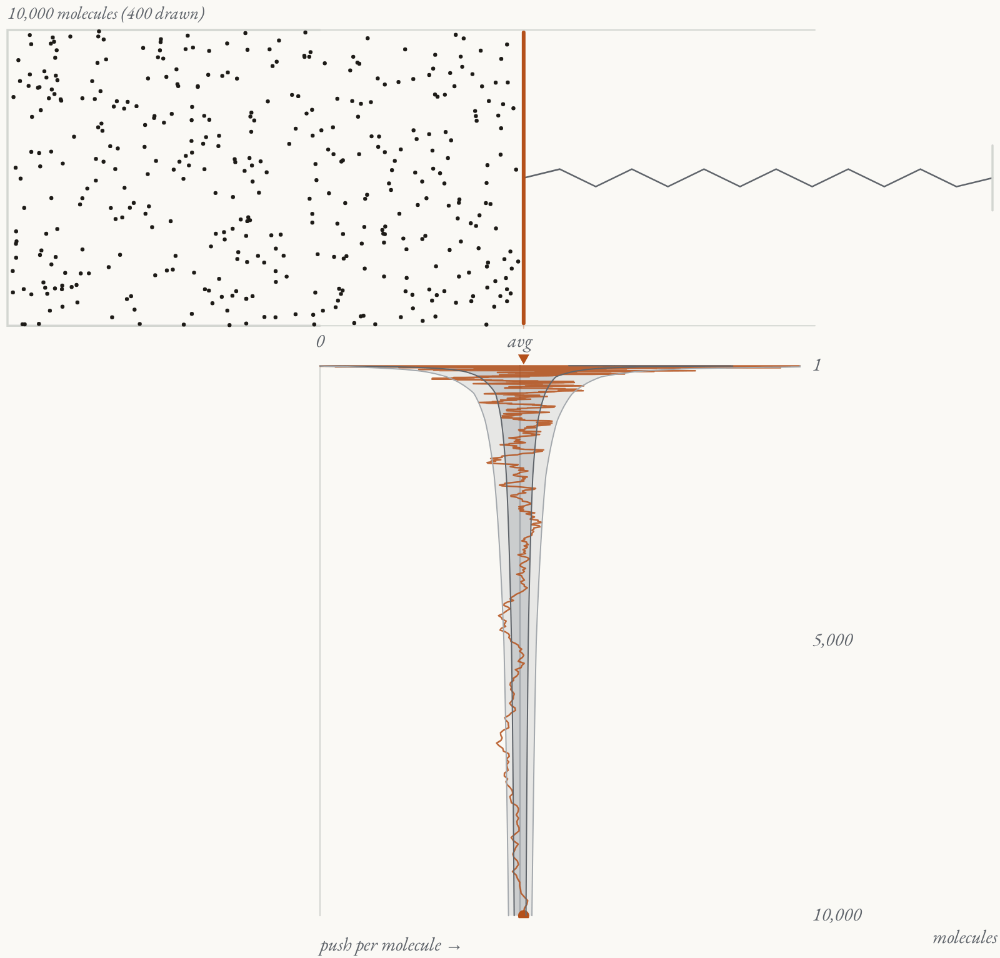
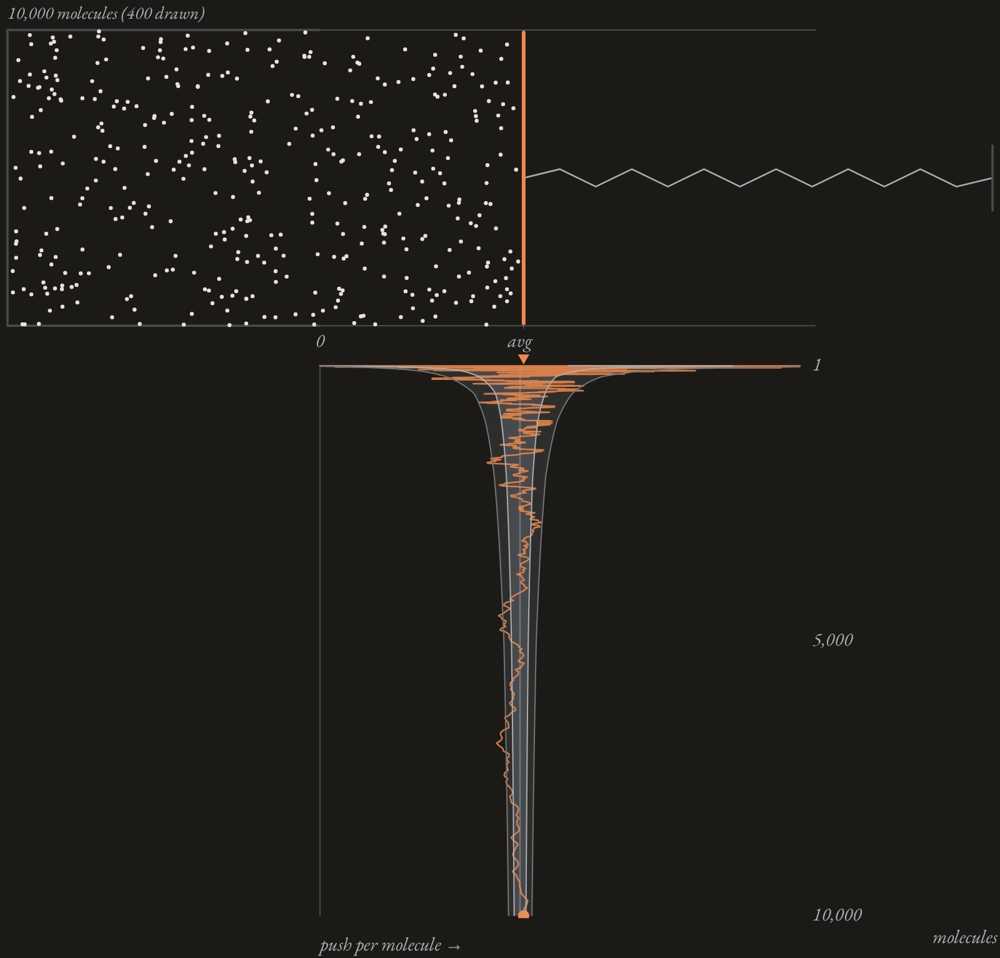
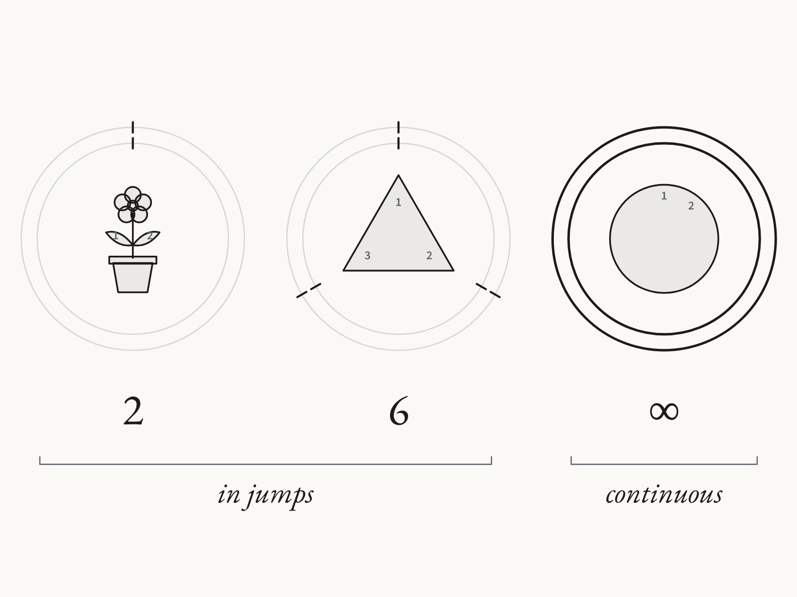
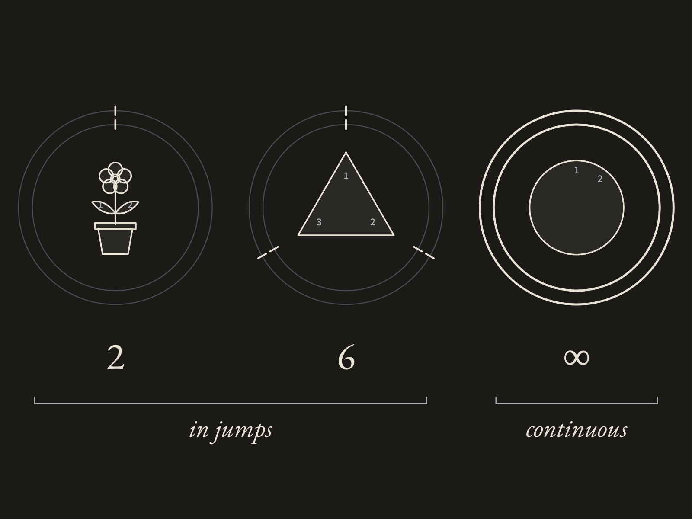
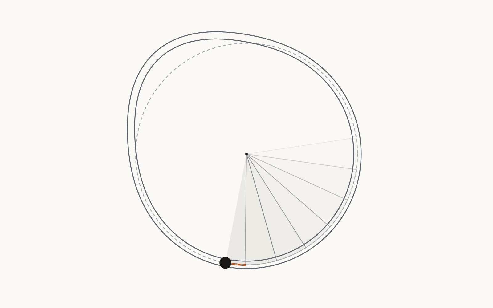
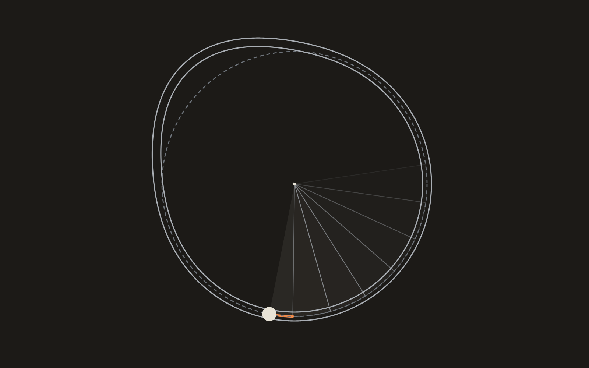

1 Physics has never existed
Yang Dong was a physicist. A string theorist. And she killed herself.
Her note was only one line long:
Physics has never existed, and will never exist.
A sentence like that does not belong in a suicide note. It belongs as the opening line of a metaphysics textbook. But to Yang, it was not philosophy. It was despair.
Wang Miao, a nano-material scientist, could not make sense of it. How could physics never have existed? Lasers, satellites, GPS, semiconductors: modern life runs on physical laws. What did Yang see that broke her faith so completely?
When Wang asked, Yang’s partner, the physicist Ding Yi, did not answer with words. He answered with a pool table.
1.1 The Pool Table
Physicists have always loved colliding balls. Newton, Maxwell, and Einstein all reached for them, and billiards have filled physics textbooks since the nineteenth century.1 Ding Yi continued the tradition.
He placed the ball at one end of the table and struck it with the cue at a fixed angle and force. It hit the cushions and rebounded, just as expected. Then he placed the ball somewhere else and struck it again, with the same angle and the same force. The ball traced the same pattern. He did it again. And again.
Five times. Five experiments.
Each yielded the same result.
“Aren’t you shocked?” Ding asked. Wang did not know what to say.
“Come on, let’s celebrate. We’ve discovered a great principle of nature: the laws of physics are invariant across space and time.”
He was joking, but only half. This is no trivial statement. It is one of science’s deepest articles of faith: laws are not local customs. Strike the ball here or there, today or tomorrow, and the result is the same.
Imagine a sixth strike. You already know how it will go. That boredom is the signature of a law.
1.2 A World Without Repeats
Boredom is what science hopes for. Run an experiment again, get the same answer, and you have learned something that will still be true tomorrow.
Philosophers have a name for this hope: the uniformity of nature. David Hume put it plainly in the eighteenth century: the future will resemble the past; “the course of nature continues always uniformly the same.”2
Hardly anyone doubted it. Aristotle sorted nature’s motions because he believed they had regular causes. In China, Xunzi wrote 天行有常: “the heavens move with constancy.”3 Galileo, Kepler, and Newton all assumed that their laws held everywhere, on Earth and in the sky.4
This trust is what keeps us from superstition. If the world follows patterns, we are not at the mercy of whimsical gods. And this is what makes science possible. Once we believe in order rather than caprice, experiments are expected to repeat, results can be shared, and knowledge can pile up, one finding on top of another.5
Why did people stop pleasing the gods and start predicting nature? That turn, in ancient Greece and ancient China alike, is the story of Chapter 4.
What would a world without it look like? The world would just be a big lookup table, and every experiment would happen only once. Strike the ball here, write down what happened. Strike it there, write down something else. Row after row, and no row tells you anything about the next.
And actually even a lookup table won’t work. An experiment in the table just happened in the past. If we don’t assume it will happen again, then whatever happened in the past doesn’t matter. A lookup table is worth keeping only if you expect to look things up again. Even a record of the past is a bet on the future.
Machine-learning researchers meet the same wall. A model that only memorizes its training examples is a gigantic lookup table, useless on any case it has not seen. Learning means generalizing, and generalizing means betting on invariance. More in Chapter 3.
This is why Ding Yi was only half joking:
… a great principle of nature: The laws of physics are invariant across space and time. All the physical laws of human history, from Archimedes’ principle to string theory, and all the scientific discoveries and intellectual fruits of our species are the by-products of this great law.
Everything science knows rides on it. But can anyone prove it? Hume tried. What he found is the subject of the next chapter. For now, a question to carry with you: is the uniformity of nature a discovery, a bet, or something else?6
“The eternal mystery of the world is its comprehensibility… The fact that it is comprehensible is a miracle.” —Albert Einstein, 19367
1.3 Many Knobs, One Number
Physicists don’t spend their lives striking the same ball the same way. Real experiments are messy. The felt is worn in places. The ball spins. The air moves. The cushions are a little soft. Each of these is a knob, and every knob can change what happens.
And yet, beneath the clutter, the pursuit is the same: change the knobs, keep the laws. Look for the one thing that doesn’t turn when everything else does. Start with something you can hold.
Put an ice cube in a jar, screw the lid on tight, and weigh it. Leave the jar in the sun. The ice melts, the water sloshes, the glass fogs. Weigh it again. Same number. The ice is gone, but nothing was lost. It only changed form.
That is what scientists mean by conservation. Not that nothing changes, but that something is kept while everything else changes. Mass is the easy case: you can put it on a scale.
The lid matters. Leave the jar open and some water escapes as vapor, and the scale drops. Conservation holds for a closed system: nothing gets in, nothing gets out. If something seems to vanish, first ask where it went. Remember that question; it returns in Section 1.6.
Energy is harder, because no scale can weigh it. Think of it as the ability to make something happen: to move a ball, to warm a room, to make a sound. It comes in many forms, and it can turn from one into another. What it never does is appear from nothing or vanish into nothing.
Back to the pool table. The cue gives the ball energy of motion. As the ball rolls, the felt slows it down. The motion isn’t lost. It turns into a little warmth in the felt and the cushions, and a little sound: the click against the cushion. Rough felt or smooth, lively cushions or dead ones: the path is different every time. Add up the motion, the warmth, and the sound, and the total is always what the cue put in.
In the 1840s, James Joule showed that motion and heat are two forms of one thing: a falling weight that stirs a tub of water warms it by an amount you can predict.8
Energy is not the only thing kept. In every collision on the table, momentum—roughly, how hard something is to stop—is kept too. We meet it again in Section 1.5.
You already trust this law. Calories in, calories out: no one expects to lose weight while eating more cheeseburgers. But this law sometimes gives a counterintuitive result: the best bicycle helmets are built to break. The unbreakable ones pass the energy of the blow to the rider’s skull; the crushable ones absorb the shock and break. A cracked helmet has done exactly what it is supposed to do. Tall buildings follow the same rule. A perfectly rigid tower would take the full force of a gale, with nowhere for the energy to go, and could crack. A tower that sways turns the wind’s energy into motion, and dampers inside it turn that motion into a little heat. Energy has to go somewhere, and engineers design where it goes.
A calorie is a unit of energy. The “calorie” on a food label is the energy needed to warm a liter of water by one degree Celsius.
Start with the ideal table, then add the real one: the felt, the soft cushions. The ball slows, but nothing is lost.


The ideal table, where nothing slows the ball, is Galileo’s trick. He imagined a ball on a perfectly smooth, level plane and argued it would roll on forever. No such plane exists. But strip away the friction in your mind and the law shows itself; add the friction back and it is still there, hidden in the warmth. Idealization is not a lie about the world. It is how physics sees through the clutter. More in Chapter 4.9
Want to feel the trade between height and speed? PhET’s free Energy Skate Park (University of Colorado Boulder) lets you build a ramp and watch a skater swap one for the other, with friction or without.
Physics keeps its books this way. However wild the day—balls ricocheting, particles colliding—the books close clean. Energy in, energy out.
Why should anything be kept at all? Hold that question. Section 1.5 has an answer, and it comes from Emmy Noether.
Physics hides its treasures in invariants.
1.4 The Lawful Coin
A curious reader might object: not all outcomes are replicable the way billiard collisions are. What about random events, like flipping a coin? Where is the invariance there?
Flip a coin ten times and the results tell you little: seven heads, maybe, or three. But flip it a hundred times, a thousand, and something remarkable happens: the share of heads stops jumping around and settles near one half. Noise gives way to pattern.
Here is a way to see that share. Put the tails on one end of a ruler and the heads on the other, and balance it on your finger. The ruler balances at the share of heads: right in the middle if they are even, nearer the heads end if heads are ahead. It is Archimedes’ lever, put to work on chance.


Watch where the beam balances as the coins pile up. This is the law of large numbers: the more times you repeat a chancy experiment, the closer the average comes to a fixed value. Jacob Bernoulli, who first proved it, called it his golden theorem.10 Casinos thrive on it. Insurance companies rely on it. No single bet can be predicted, and the house still wins.
But hidden in the proof is an often overlooked clause: every toss must be a fair copy of every other. Your previous toss must not interfere with the next; a toss here or there, today or tomorrow, makes no difference, as if all these tosses were drawn from the same deck. Swap in a bent coin halfway through, or let the coin wear down a little with each toss, and the average has nothing to settle on.
Statisticians call this clause independent and identically distributed, or i.i.d. Independent: no toss affects another. Identically distributed: every toss has the same odds.
This is Hume’s principle in disguise: uniformity all over again. Even chance keeps a law only if nature keeps its habits across time and space.
Now trade the pool table for a box of gas. Shrink the balls to molecules, thousands of them, flying in every direction and never slowing down. Make one wall of the box a piston held back by a spring, like the plunger inside a tyre gauge. Each molecule that hits the piston knocks it back a little, and the spring pushes it home. With three molecules, the piston jerks: a knock, then nothing, then two knocks at once. With thousands, the knocks become a hum. The piston settles at one spot and only trembles there. No single hit can be predicted. Their sum can.
That steady push has a name: pressure. The air around you is a box like this, with countless molecules striking every surface they meet, your skin included. No one tracks them one by one. The pressure is steady anyway. It is the law of large numbers, working inside physics.
Temperature is the same trick: a measure of how fast the molecules move, on average. Heat the air and the hits get harder, and the push grows.


An honest note on the widget. A real piston would barely move; the drawing exaggerates it so you can see the reading. And only 400 of the molecules are drawn. The rest are counted with a tested shortcut: in this model the molecules never meet, so their pushes simply add up.
Hold on to this move: what can’t be predicted one by one can be predicted on average. It returns in Chapter 6, where tomorrow’s weather can’t be forecast a month ahead, but the climate can be studied.
Only when such invariance holds can statistics, probability, and the sciences built on them exist at all. Even in randomness, invariance survives, as long as every toss is a fair copy of the last.
1.5 Three Names, One Bet
Physics is built on a particular type of invariance, called symmetry. We know the idea from everyday life: my left hand mirrors my right. Hold it up to a mirror, and the image is my right hand. That mirroring is the symmetry.
Mathematicians make the idea exact. A symmetry of a shape is a move that leaves it looking exactly as it did. Take a square. Turn it a quarter of the way around: still the same square. A half turn, three quarters: the same. Doing nothing at all counts too; it is the dullest symmetry, but a symmetry. Flip it over, left to right, top to bottom, or across either diagonal: the same again. Four turns and four flips. A square has eight symmetries, and no more.
Why not count turning backward? A quarter turn backward lands the square exactly where three quarters forward does, so it is not a new move. And a full turn lands where doing nothing does.
Try harder shapes.


Most shapes allow only jumps: a quarter turn, a flip, a sixth of a turn for a snowflake. Anything in between spoils them. The circle is different. Turn it by any amount, a half, a tenth, a hair, and it is still the same circle. Its symmetry never jumps. Mathematicians call it continuous, and it is the kind that physics cares about.
A globe goes further: turn it about any axis, by any amount, and it looks the same.
Now give the circle a job. Cut it into a table as a smooth, round groove, and set a marble running in it. Give it one push and leave it alone. In an ideal groove, with no friction, the marble goes around and around. Its direction changes every moment, but its pace around the circle never does.
Why not? Because nothing in the marble’s world can speed it up or slow it down. For the marble, the groove is the world, and that world looks the same at every point along the way. No stretch of the circle is steeper, rougher, or different from any other. So no part of the trip pushes harder than any other part.
Now bend the groove a little: push one short stretch of it outward.


With the bend, the groove is no longer a perfect circle, and the marble’s world no longer looks the same all the way around. One place is different, and in that place the pace changes. Out on the bend the marble keeps its speed, but it swings wide, so its pace around the centre drops; back on the circle it picks up again. The circle’s symmetry is gone, and so is the steady pace. Make the groove round again, and both come back together.
That is the whole pattern in miniature. Where the marble’s world looks the same however you turn it, something about the marble’s motion is kept. Break the symmetry, and you lose what was kept.
Physicists call what the groove keeps angular momentum: roughly, how much a thing is circling. In a round groove the marble’s distance from the centre never changes, so keeping its angular momentum means keeping its pace around.11
Now straighten the groove. Make it a perfectly straight line, running on forever in both directions, and give the marble one push. Every stretch of the groove looks like every other, so nothing along the way can speed the marble up or slow it down. It slides on forever, at the same speed, in the same direction.
This is Galileo’s ideal plane from Section 1.3, and Newton’s first law: left alone, a moving thing keeps moving. What the straight groove keeps is momentum, roughly the amount of straight-line motion.
Two grooves, two symmetries. The circle looks the same however far you turn along it, and the marble keeps its pace around. The straight line looks the same however far you slide along it, and the marble keeps its speed. Spoil the groove anywhere, with a bend or a bump, and what was kept is lost.
But a groove is a thing we carved. Now take it away.
Picture a planet circling the sun. No track holds it. What keeps it on its path is the sun’s pull, and the pull follows one rule everywhere: it points at the sun, and it weakens with distance the same way in every direction. In the groove, a wall held the marble. Here nothing holds the planet but a rule, and the rule plays no favorites among directions.
Now turn the whole system, sun and planet together, to face another way in empty space. Or move it somewhere else entirely. Nothing about the orbit changes. Not because of any track, but because space itself has no favored direction and no favored place. The marble’s groove has become the space that every object lives in.
So symmetry in physics is not, in the end, about objects. Objects are lumpy: the Earth is not a perfect ball, and no table is perfectly smooth. Symmetry is about the stage the objects stand on. In this picture of the world, space is the same in every direction and at every place.
Physicists have a word for each: space that looks the same in every direction is isotropic; space that looks the same at every place is homogeneous.
Add time to the stage, so that what happens today would happen the same way tomorrow, and we are back at the pool table.
This is what Ding Yi was celebrating at the pool table: the laws of physics are invariant across space and time. His “great principle” is a claim about symmetry. Not the symmetry of any object, but of the whole world: turn all of it, move all of it, or start all of it a day later, and nothing changes.
Notice the assumption inside it: that every place, every direction, and every moment is as good as any other, a uniform stage on which things happen. Newton pictured space and time this way. Einstein’s space and time can bend, and in an expanding universe, the “same tomorrow as today” no longer holds everywhere. What space and time are, and how much of that is our choice of measures, is the question of Chapter 2.
In 1915, Emmy Noether, a German mathematician lecturing at the University of Göttingen without pay—merely because she was a woman—discovered a secret mathematical architecture beneath the laws of physics. She proved that, loosely speaking, whenever a physical system behaves the same regardless of where it is, when it is, or how it is oriented, there must exist a law of conservation.12
Göttingen’s faculty debated for years whether a woman could lecture. David Hilbert is said to have answered, “We are a university, not a bathhouse.”13
Every continuous symmetry guarantees a conservation law. The marble’s groove was a small version of one of them. Not the objects in the world, but the world itself, the space that things are in, looks the same however it is turned. That is a picture of what the world is like: one view of how it could be. If the picture is right, the circling of things, their angular momentum, is conserved: for spinning planets and skaters alike. And the same logic works for the other ways of moving the whole world:
- The world is the same whichever way it faces → angular momentum is conserved.
- The world is the same here as twelve inches, or any distance, to the left or right, front or back → momentum, roughly the amount of straight-line motion, is conserved.
- The world is the same today as tomorrow, or yesterday, or the next nanosecond → energy is conserved.
This answers the question from Section 1.3. When you tried to break the law on the pool table and couldn’t, the reason was this last line. Energy is kept because the laws are the same from one moment to the next.
Notice that we have now met the same idea three times. Philosophers call it the uniformity of nature. Statisticians call it the i.i.d. assumption. Physicists call it symmetry, and conservation laws are its fingerprints. But no matter what we call it, it’s about finding something that doesn’t change throughout time or throughout space, so that what we learn here and now will also apply elsewhere and in the future. Three names, one bet.
And Noether’s theorem cuts both ways. A continuous symmetry guarantees a conservation law, so if a conservation law ever failed, a symmetry would have failed with it. Either we left something out of the count, some push or pull we never thought to count, or the world itself is not the same everywhere, in every direction, at every moment. If it is the second, then the stage we have been standing on all along was an assumption.
What if it is?
1.6 The Ghost Particle
Now, imagine you are a particle detective on a cosmic crime scene: when a radioactive nucleus undergoes beta decay, transforming a neutron into a proton and emitting an electron, something doesn’t add up. The emitted electrons don’t always carry the expected amount of energy and their trajectories don’t always align with the conservation of momentum. What do you conclude?
This was a profound crisis for physicists in the 1930s. By Noether’s theorem, it implies one of the following two possibilities. One possibility is that, somehow for beta decay reactions, the continuous spatial and time symmetries don’t hold. In other words, for beta decay alone, space and time are discrete, forming a kind of lattice, as if particles are jumping on an infinite chessboard from one grid to another. The other possibility is that something is missing. This was indeed physicist Wolfgang Pauli’s proposal: an unknown particle carries away the missing energy and momentum like a thief who had made off with some of the loot.
Yet the second possibility is equally mysterious. This unknown particle would have to be able to escape detection, meaning that it doesn’t interact with an electron or a nucleus that it encounters. Pauli concluded, this particle, like a ghost, can pass through the entire earth without interacting.
Pauli himself was troubled by his own untestable hypothesis, acknowledging that he had committed the worst mistake a physicist could commit: postulating a particle that cannot be subjected to experimental scrutiny.14 He wrote in a letter in 1930, “I agree that my remedy could seem incredible because one should have seen these particles much earlier if they really exist. But only the ones who dares can win and the difficult situation, due to the continuous structure of the beta spectrum, is lighted by a remark of my honoured predecessor, Mr Debye, who told me recently in Brussels: ‘Oh, it’s well better not to think about this at all, like new taxes.’ From now on, every solution to the issue must be discussed. Thus, dear radioactive people, look and judge.”15
For decades, the ghost particle remained a phantom. It was finally confirmed via experiments in 1956 by Clyde Cowan and Fredrick Reines, and gained the name neutrino. It turns out that neutrinos, ghostlike as they are, indeed have traces. There is a very small, but non-zero chance that neutrinos interact with a nucleus. So physicists pile an enormous amount of nuclei in front of a beam of neutrinos, and wait, listening to that faintest creak of the floor boards in vast haunted houses.
Noether’s Theorem, and with it, the beautiful architecture of physics, was saved. Nobel Laureate, physicist Leon Lederman, and theoretical physicist Christopher Hill wrote,
We should add that experimentalists still often look for missing energy and momentum in their detectors in particle collisions, but this is always interpreted nowadays as evidence for a new particle, never as evidence for the breakdown of the conservation laws of energy and momentum. Our faith, or should we say confidence (as science is not faith-based), in the symmetries of the structure of space and time, and Noether’s theorem would, at this point, be very hard to shake.16
Even though the universe sometimes presents us with puzzles that seem to defy our most cherished laws, the answer often lies not in the breakdown of those laws, but in a deeper, more complete understanding of the underlying reality. Symmetry is the premise; conservation the promise.
The universe, though mysterious, ultimately plays fair.
1.7 Through the Looking-Glass, and What Alice Found There
Alice who adventured in Wonderland once again steps across the threshold. This time, she climbs through a large looking-glass, a mirror. The world in the mirror should look the same, only reversed. The left hand becomes right, the teacup is still a teacup, the chessboard is still a chessboard. The mirror reassures: the rules are unchanged, only inverted.
This is the promise of parity in physics. Flip space like a mirror, and the equations should hold. North and south, left and right, clockwise and counterclockwise—no preferred side, no sacred orientation. Nature, impartial, does not distinguish between her reflection and herself.
For decades, physicists assumed this symmetry was absolute. It was not just an assumption, but an article of faith: nature’s mirror never lies. The very idea that the reflection could misbehave—that the rules inside the glass might be different—was unthinkable. Space, time, rotation, parity, charge—pillars of invariance. Break them and the temple of physics shakes.
But then came a puzzle that cracked the mirror.
In the early 1950s, physicists once again noticed something strange. Two subatomic particles, known as the tau and the theta, looked identical in every measurable way—same mass, same charge, same lifetime. They should have been the same particle. But they weren’t. The tau decayed into three pions; the theta decayed into two. Their only difference lay in parity, their mirror identity, as if Nature decides mirror images should differ.
The resolution came in 1956—the same year when neutrino was confirmed—with the bold, yet revolutionary suggestion by Tsung-Dao Lee and Chen-Ning Yang. The young Chinese American scientists proposed that parity, the symmetry between a physical system and its mirror image, might not be conserved.17
Theory is cheap. Experiment is king. Lee and Yang talked to experimental physicist Chien-Shiung Wu, or Madame Wu, as she is universally known. She, like Alice before her, looked into the mirror by freezing cobalt nuclei in near absolute zero, aligning them, and watching them spit electrons. If parity were sacred, the spray would be symmetric. It wasn’t. The electrons came out lopsided, as if the universe had a preferred hand.
Parity symmetry is violated. Nature is left-handed, after all.
Lee and Yang won the Nobel Prize in the same year. This discovery was a seismic event in physics, challenging a deeply held “article of faith” in the scientific community. Wolfgang Pauli wrote in a letter, “Now after the first shock is over, I begin to collect myself. Yes, it was very dramatic.”18 Feynman who lost $50 dollars to a fellow scientist in 1956 on a bet that parity symmetry would not be violated, even in his 1985 book, still expressed disbelief and hope that “a more beautiful and, hence, more accurate understanding” of things will emerge.
This discovery was disturbing philosophically. Physicist A. Zee later made it clear,
The crucial idea which came to Lee and Yang is that Nature may respect parity in many of her laws, but not in the laws governing the weak interaction between particles. Imagine that one of the fundamental principles of our legal system, that the accused is presumed innocent until proven otherwise, is decreed to hold only for certain crimes, while for other crimes the opposite is to be the case. Just as judicial philosophers would surely cringe at this notion, physicists find Nature’s selective violation of parity rather discomforting philosophically.19
1.8 Beyond the Mirror: CP, T, and CPT
Parity was gone, but physicists clung to hope. Maybe if you combined a mirror with antimatter—in technical jargon, charge conjugation plus parity, or CP—the universe would be restored. A mirrored world of antiparticles should behave like ours. That was the creed of the 1960s.
Until it wasn’t.
In 1964, James Cronin and Val Fitch found that neutral kaons—particles flickering between matter and antimatter—sometimes decayed in ways forbidden by CP symmetry. Not often. Just rarely enough to unsettle faith. CP, too, was broken. This won them the Nobel Prize in 1980.
If CP fails, then by the structure of physics, time reversal (T) must fail too. Imagine a movie of particles colliding—play it backward. For most forces, the reversed movie looks physically possible. But in the weak interaction, it doesn’t. Time itself, at the microscopic level, is not fully reversible.
And yet, there is one last covenant: CPT symmetry. Combine all three—charge, parity, and time—and nature holds steady. CPT means this: if you flip left and right, swap matter for antimatter, and reverse the arrow of time all at once, the world plays fair again. This is not just a guess; it is a theorem. As long as physics obeys the basic assumptions of relativity and quantum fields, CPT cannot fail. And in every experiment ever performed, CPT holds.
So yes, symmetry after symmetry has fallen. Parity. Charge. CP. Time. Each one, once thought sacred, turned out to be conditional. But CPT remains unbroken.
That survival is not trivial. It is what gives us hope that the laws of physics are still coherent. It is why matter and antimatter have the same mass, why conservation still feels real, why the edifice of physics hasn’t collapsed into Yang Dong’s despair.
Just as important: these violations are reproducible. Wu’s cobalt electrons always shoot left. Kaons always betray CP at the same tiny fraction. The movie of time reversal always fails in the same way. Scandalous, yes—but scandal written into law. The mirror lies, but it lies consistently.
This was the reassurance: nature might break her covenants, but she does so predictably. A broken law is still a law if its violations can be written down and repeated.
Even in the ruins of symmetry, some structure endures.
1.9 Breaking Symmetry
No matter where you set the ball on the lawful pool table, the energy conserves because there is spatial symmetry. But what if we broke the spatial symmetry?
1.10 The Unlawful Table
“I still don’t understand what you’re getting at,” Wang asked. How is the pool table relevant to Yang’s suicide?
Ding lit a cigarette, “Imagine another set of results. The first time, the white ball drove the black ball into the pocket. The second time, the black ball bounced away. The third time, the black ball flew onto the ceiling. The fourth time, the black ball shot around the room like a frighted sparrow, finally taking refuge in your jacket pocket. The fifth time, the black ball flew away at nearly the speed of light, breaking the edge of the pool table, shooting through the wall, and leaving the Earth and Solar system, just like Asimov once described. What would you think then?”
Indeed, a demon’s pool table.
After a long silence, Ding explained that physicists’ expensive “pool tables”—high-energy particle accelerators—constructed on different continents, have been consistently failing to yield the same results with the same experimental setup. If this were the case for all these physical experiments described earlier, we would not have been able to discover neutrino or symmetry violations.
Now imagine a similarly unlawful coin. When you flipped it, the first time, it gave you heads; the second time, it flew outside of the room; the third time, it hovered in midair humming like a hive of bees; the fourth time, it spun forever without landing, defying gravity’s grasp; the fifth time, it burst into flame and fizzled into ash, leaving only a scorch mark on the table.
… there seemed to be no pattern.
In the story, the leap from a lack of pattern to Yang Dong’s last words that “physics has never existed” is too quick. In reality, physicists are never afraid of “no obvious patterns” because they know they are dealing with complex situations with many knobs and with worlds governed by probabilities, not certainties, as exemplified by quantum physics.
In experiments with cobalt and kaons that support parity and CP violation above, at least physicists were able to repeatedly get the same result over and over again. Anomalies are still invariant on the lawful pool table. Invariant anomalies can still be written as laws.
Yang’s true crisis arises not from “no pattern” nor is it from simple replication failures, but from a fundamental betrayal of both scientific methods and their underlying principles.
1.11 Betrayal of Scientific Methods
Scientific method is not a single recipe but a set of practices.20 We design experiments so they can be replicated. We build theories so they can predict. We subject hypotheses to conditions where they might be falsified. We rely on measurement and quantification so that results can be communicated and compared. We use statistical inference so that from noisy samples we can draw stable generalizations. And we expose findings to peer scrutiny so that knowledge accumulates collectively, not privately. All these are parts of scientific methods that allow scientists to verify findings, build consensus, and gradually construct a towering edifice of knowledge about the universe, from the smallest particles to the largest galaxies.
However, all of these methods presuppose that the world itself is stable enough for yesterday’s data to apply tomorrow—uniformity of nature. Even failures to replicate previous results should be invariant. Without invariance, replication is meaningless, prediction impossible, falsification incoherent.
Yet, what Yang Dong and her peers were facing was a complete lack of patterns: identical setups yielded wildly different outcomes, so wild that even our best statistical tools could not capture the slight hint of invariance as if it were the demon’s coin.
Yang’s despair was not about complexity or chance—it was about the collapse of this scaffolding. A scientist can live with error and with noise; she cannot live with the treachery that makes her methods useless.
1.12 Apostasy of Symmetry
In our world, the mirrors crack but do not shatter. Even when symmetry fails, the failure repeats. Physicists can write down the fractions, build new theories, and live with scandal made consistent. In Yang Dong’s world, there is no such mercy. The experiment does not only violate symmetry—it refuses to give the same answer twice. Not scandal, but madness. Not law, but caprice. That is why she despaired.
For Yang, who had as much faith as any serious scientist does, this was the final betrayal. Symmetry was not just a mathematical trick but the deep covenant of nature. It was the bridge between invariance and conservation, the silent guarantor that science could still speak a coherent language.
From Yang Dong’s view, everything that we ever know from physics, from quarks to quasars, was an illusion. To see symmetry dissolve was to see the pillars of the temple collapse.
Physics has never existed, and will never exist.
Newton pictured light as a stream of tiny particles. Maxwell showed in 1859 that Saturn’s rings must be made of countless small bodies rather than a solid sheet (1859). Einstein explained in 1905 the jittering of pollen grains in water (Brownian motion) as the result of invisible molecules knocking into them (1905).↩︎
Hume never named the principle himself. In the Treatise he writes that reasoning from experience “would proceed upon that principle that instances, of which we have had no experience, must resemble those, of which we have had experience, and that the course of nature continues always uniformly the same” (Hume [1739] 2000). Philosophers later called it the Uniformity Principle or the Principle of the Uniformity of Nature. See Henderson (2018).↩︎
Another translation: “There is a constancy to the activities of Heaven” (Xunzi 2014, 175).↩︎
Galileo’s last book, Two New Sciences ([1638] 1914), treats the motion of all falling bodies by one mathematics. Kepler states that his third law holds for “any two planets” ([1619] 2021). Newton, in the preface to the Principia, hoped to “derive the rest of the phænomena of nature by the same kind of reasoning from mechanical principles” ([1687] 1846).↩︎
It is hard, perhaps impossible, to date this naturalistic turn. Most histories start Western science with the natural philosophy of ancient Greece, if not Egypt and Mesopotamia; see Lindberg (2010) or McClellan and Dorn (2015). Nor did the turn remove God from science; see Harrison and Roberts (2019).↩︎
Philosophers still disagree. Mill treated it as an empirical truth; Russell as a postulate we cannot do without. See Salmon (1953).↩︎
Einstein (1936). The line usually quoted, “The most incomprehensible thing about the universe is that it is comprehensible,” is a paraphrase.↩︎
Joule, on the paddle-wheel experiment (1840s). ↩︎
Galileo, Two New Sciences (1638); also the Dialogue (1632). ↩︎
Published after his death, in Ars Conjectandi (The Art of Conjecturing) ([1713] 2006).↩︎
In general angular momentum is mass times speed times distance from the centre, counting only the part of the speed that goes around the centre. A skater who pulls in her arms spins faster for this reason: less distance, more pace, the same total. On the bend, the marble’s distance grows while its speed stays the same, so its angular momentum changes. ↩︎
Noether found the theorem in 1915 and published it in 1918. “Loosely speaking”: the theorem applies to systems whose laws can be written in a particular mathematical form, which covers the fundamental laws of physics but not, for instance, a table with friction treated on its own. The full statement, and the groove worked out properly, are in Appendix A.↩︎
Widely repeated, possibly apocryphal. Read more in Emmy Noether’s Wonderful Theorem (Neuenschwander 2017), Symmetry and the Beautiful Universe (Lederman and Hill 2011), and the biography Proving It Her Way (Rowe and Koreuber 2020).↩︎
Symmetry and the Beautiful Universe by Lederman and Hill (2011, 108).↩︎
Symmetry and the Beautiful Universe by Lederman and Hill (2011, 109)↩︎
More precisely, parity symmetry was proposed to be violoated in weak interactions. The “weak interaction” is one of the four fundamental forces of nature, alongside gravity, electromagnetism, and the strong force that binds nuclei. Unlike the others, it doesn’t push or pull in ways we can feel directly. Instead, it quietly governs certain rare processes—the slow disintegration of atomic nuclei, the burning of stars, the very fact that the Sun shines. It is called weak not because it is unimportant, but because, compared to the other forces, its grip is feeble and short-ranged.↩︎
Fearful Symmetry (Zee 2015, 29)↩︎
This is, of course, when we adopt views in Longino’s Science as Social Knowledge (1990).↩︎